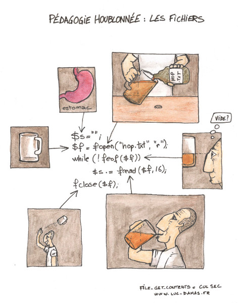

Table des matières
Les bases en PHP
Pourquoi PHP ?

Introduction à PHP
- PHP (PHP: Hypertext Preprocessor)
- Langage de programmation
- impératif, procédural (suite d'instructions)
- interprété côté serveur
- libre
- Pages Web dynamiques
- Logo :
- Mascotte (Elephpant) :

Quelques versions de php
1.0 : 1995 :PHP: Personal Home Page2.0 : 1997 :Base du langage PHP actuel3.0 : 1998-2000 :PHP: Hypertext Preprocessor4.0 : 2000-2001 :Zend engine4.3 : 2002-2005 :CLI: Command line interface5.0 : 2004-2005 :Zend engine 2, Programmation objet5.3 : 2009-2014 :Namespace, closure5.4 : 2012-2015 :Trait6.0 : ......... :Unicode7.0 : 2015-2018 :Zend engine 3
Hello world
- Créer un fichier avec l'extension .php
- Insérer du code HTML et/ou PHP
- Le code PHP doit être délimité par les balises
<?phpet?> - Les instructions se terminent par
; - Les commentaires sont délimités par :
//pour un commentaire sur une ligne/*pour un commentaire sur plusieurs lignes*/
<em><?php //* Comment hack echo 'Hello world'; // */ ?></em>
Les types en PHP
- types simples :
- boolean
- integer
- float (avant double)
- string
- types composés :
- array (tableau)
- object (objet)
- types spéciaux :
- resource
- NULL
Les booléens (boolean)
- Type le plus simple pour exprimer une valeur de vérité.
- Deux constantes insensibles à la casse :
- TRUE (vrai)
- FALSE (faux)
<?php echo TRUE; ?> <?php echo true; ?> <?php var_dump(TRUE); ?>
<?php echo FALSE; ?> <?php echo false; ?> <?php var_dump(FALSE); ?>
Les booléens (cast)
- On utilise
(bool)ou(boolean) - Quand on convertit une valeur en booléen, sont considérés
false:- le booléen
false - l'entier
0 - le réel
0.0 - la chaîne vide
""et la chaîne"0" - tout tableau vide
- tout objet sans membre ni variable (PHP4)
- le type
NULL(ainsi que les variables non définies)
- le booléen
- Toutes les autres valeurs sont considérées comme
true
Les booléens (exemple)
<?php var_dump((bool) ""); var_dump((bool) 1); var_dump((bool) -2); var_dump((bool) "foo"); var_dump((bool) 2.3); var_dump((bool) array(12)); var_dump((bool) array()); var_dump((bool) "false"); ?>
Les entiers (integer)
- Un entier est un nombre de \({\mathbb{Z} = \{ \dots, -2, -1, 0, 1, 2, \dots\}}\)
- Il peut se définir en :
- décimal (base 10) : 42
- hexadécimal (base 16) : 0x2A
- octal (base 8) : 052
- binaire (base 2) : 0b101010 (PHP 5.4)
- Il peut être précédé du signe
-ou+
Les entiers (définis formellement)
decimal : [1-9][0-9]*
| 0
hexadecimal : 0[xX][0-9a-fA-F]+
octal : 0[0-7]+
binary : 0b[01]+
integer : [+-]?decimal
| [+-]?hexadecimal
| [+-]?octal
| [+-]?binary
Les entiers (cast)
- On utilise
(int)ou(integer) falsecorrespond à0ettrueà1- Un réel sera arrondi vers
0 - Seule la partie initiale d'une chaîne de caractères est prise en compte
- Faire attention de manière générale à la conversion des autres types
Les réels (float/double)
- Un réel (nombre à virgule flottante) appartient à \({\mathbb{R}}\)
- La taille d'un réel dépend de la plateforme, mais en général
- max = ~1.8e308
- précision de 14 chiffres
- Attention à la perte de précision : http://www.floating-point-gui.de/
Les réels (définis formellement)
LNUM [0-9]+
DNUM ([0-9]*[\.]{LNUM}) | ({LNUM}[\.][0-9]*)
EXPONENT_DNUM [+-]?(({LNUM} | {DNUM}) [eE][+-]? {LNUM})
Les réels (cast)
- On utilise
(float)ou(double) - Seule la partie initiale d'une chaîne de caractères est prise en compte
- Pour les autres types, l'élément est d'abord converti en
intpuis enfloat
Les entiers et les réels (exemple)
<?php //* var_dump(42); var_dump(-42); var_dump(052); var_dump(0x2A); var_dump((int)4.2); var_dump((int)"la réponse est 42"); var_dump((int)"42, la réponse est"); var_dump((float)"42.0 42"); // */ // Floating point problem /* var_dump((int) ((0.1+0.7)*10)); var_dump((int)1.999999999999999); var_dump((int)1.9999999999999999); // */ ?>
Les chaînes de caractères (string)
- Une chaîne de caractères correspond à un tableau d'octets.
- Elle se définit à l'aide des
'ou" - Les guillemets simples :
- pour afficher
'il faut le préfixer par\ - pour afficher
\il faut utiliser\\ - tous les autres caractères préfixés par
\sont affichés (\n,\r)
- pour afficher
- Les guillemets doubles :
- pour afficher
"il faut le préfixer par\ - les caractères préfixés par
\sont interprêtés - les variables sont également interprêtées
- pour afficher
Les chaînes de caractères (cast)
- On utilise
(string) - Convertion automatique avec certaines fonctions comme
echo,print trueest converti en"1"etfalseen""
Les chaînes de caractères (affichage)
echoetprintne sont pas de vraies fonctions (l'utilisation des parenthèses est facultative, mais recommandée)- la fonction
printfaffiche une chaîne de caractère formatée et retourne la longueur de la chaîne affichéeint printf (string $format [, mixed $args [, mixed $... ]] )
- la fonction
sprintfretourne une chaîne formatéeint sprintf (string $format [, mixed $args [, mixed $... ]] )
Les chaînes de caractères (format)
- Le format dépend du type du paramètre que l'on veut afficher
"%s"pour une chaîne de caractères"%d"pour un entier"%f"pour un réel
- Il peut spécifier un affichage personnalisé
"%4d"affiche un entier de 4 caractères préfixé par des espaces"%'04d"affiche un entier de 4 caractères préfixé par des0
- Il permet de réordonner les paramètres
"%2$s"affiche le 2e paramètre comme une chaîne de caractères"%1$'04d"affiche le 1er paramètre sous forme d'entier de 4 caractères minimum préfixé par des0
Les chaînes de caractères (fonctions de base)
strlen: retourne la longueur de la chaîne$strstrcmp: compare deux chaînestrim: supprime les espaces ou un autre caractère
ltrim) et fin de chaîne (rtrim)substr: retourne une sous-chaînestrpos: cherche la position d'une sous-chaîne dans une autre chaînenl2br: remplace\nen<br>ucfirst: première lettre en majusculeucwords: première lettre de chaque mot en majuscule- D'autres fonctions
str_replace,strtolower,strtoupper,implode,explodesur : http://php.net/manual/en/ref.strings.php
Résumé (types simples)
<?php var_dump("0"); var_dump("0" + 2); var_dump("0" + 1.3); var_dump("0" + true); ?>
Les tableaux (array)
- Il faut utiliser le mot clé
array()([]autorisé depuis PHP 5.4) - Chaque paramètre correspond à une paire
clé => valeur - Une clé peut-être un entier ou une chaîne de caractères
- Une chaîne correspondant à un entier valide sera transformé en entier
- Les autres types sont convertis en entiers
- Les clés sont optionnelles.
Les tableaux (fonctions de base)
count: retourne le nombre d'éléments contenus dans un tableausort: trie par rapport aux valeurs un tableau (rsortreverse)asort: trie les valeurs en conservant les clés (arsortreverse)ksort: trie les clés d'un tableau (krsortreverse)array_keys: retourne les clés d'un tableau sous forme d'un tableauarray_values: retourne les valeurs d'un tableau sous forme d'un tableau- D'autres fonctions
array_pop,array_shift,array_mapsur : http://php.net/manual/en/function.array.php
Les tableaux (exemple)
<?php var_dump(array("a","b","c")); var_dump(array("a" => "b", 3 => "c")); var_dump(array("a", 3 => "b", "c")); ?>
Les variables et constantes
Les variables
- Une variable est désignée par le signe
$ - Le nom est sensible à la casse et commence par une lettre ou un
tiret du bas
_suivi de lettres, de chiffres ou_ $thisest une variable spéciale qui ne peut pas être modifiée- Il n'est pas obligatoire de déclarer et d'initialiser les variables (recommandé)
- Le nom d'une variable peut être dynamique
Gérer le type d'une variable
- La fonction
gettype()permet d'obtenir une chaîne de caractères correspondant au type de l'argument :boolean,integer,double,string,array,object,resource,NULLouunknown type. - Les fonctions suivantes :
is_array(),is_bool(),is_float(),is_int(),is_null(),is_numeric(),is_object(),is_resource(),is_scalar()(integer, float, string and booleen),is_string()permettent de vérifier si un argument est d'un type particulier. - Le typage est dynamique en PHP
Tester l'état d'une variable
empty()is_null()isset()(bool)- http://php.net/manual/en/types.comparisons.php
empty() !== (bool) is_null() !== isset()
'php' == 0 => true 0 == null => true null == 'php' => false
Les constantes
- Par définition, la valeur d'une constante ne peut pas être modifiée
- On utilise par convention, un nom écrit en lettres capitales
- La fonction
defineest utilisée
<?php define('HELLO', 3); $a = 'hello'; $$a = 'world'; var_dump(HELLO); //var_dump('$a $hello HELLO'); //var_dump("$a $hello $$a HELLO"); ?>
Les opérateurs
- Les opérateurs arithmétiques
- Les opérateurs d'affectation
- Les opérateurs de comparaison
- Les opérateurs d'incrémentation et décrémentation
- L'opérateur ternaire
- Les opérateurs logiques
- Les autres opérateurs
Les opérateurs arithmétiques
-$a: la négation$a + $b: l'addition$a - $b: la soustraction$a * $b: la multiplication$a / $b: la division$a % $b: le modulo$a ** $b: l'exponentielle (PHP 5.6)
Les opérateurs d'affectation
- Le signe
= - Il est possible de combiner le signe
=avec d'autres opérateurs - Le passage par référence est possible avec
& - L'opérateur
*du C n'a pas de signification en PHP
<?php $a = 3; $b = &$a; $a += 4; var_dump($a); var_dump($b); ?>
Les opérateurs de comparaison
$a == $b: égalité des valeurs$a === $b: identité (égalité des valeurs et des types)$a != $b: différence$a <> $b: différence$a !== $b: non identité (différence des valeurs ou des types)$a < $b: infériorité$a > $b: supériorité$a <= $b: infériorité ou égalité$a >= $b: supériorité ou égalité
Les opérateurs d'incrémentation et décrémentation
++$a: incrémente$ade 1, puis retourne$a$a++: retourne$apuis incrémente$ade 1--$a: décrémente$ade 1, puis retourne$a$a--: retourne$apuis décrémente$ade 1
<?php $a = 3; var_dump($a++); //var_dump($a); //var_dump(--$a); //var_dump($a); ?>
L'opérateur ternaire
?:est un opérateur conditionnel ternaire(expr1) ? (expr2) : (expr3)est évalué à :expr2siexpr1est évaluée àtrueexpr3siexpr1est évaluée àfalse
expr2n'est plus obligatoire depuis PHP 5.3
<?php var_dump('1' == 1 ? 'oui' : 'non'); var_dump('1' === 1 ? 'oui' : 'non'); ?>
Les opérateurs logiques
$a && $b:truesi$aet$bvalenttrue$a and $b:truesi$aet$bvalenttrue$a || $b:truesi$avauttrueou$bvauttrue$a or $b:truesi$avauttrueou$bvauttrue$a xor $b:truesi$avauttrueou$bvauttruemais pas les 2!$a:truesi$ane vaut pastrue
Les autres opérateurs
.correspond à l'opération de concaténation pour les chaînes de caractères[index]permet d'accéder à un élément particulier d'un tableau[]permet assigner une valeur à la fin d'un tableau
<?php $a = "hello "; $b = array($a); $b[] = "world"; var_dump($a[4]); var_dump($a.$b[1]); ?>
Les structures de contrôle
- Les structures conditionnelles
- Les structures répétitives
- L'inclusion de fichiers
Les structures conditionnelles (if, else, elseif)
if (condition) { instructions; // si condition évaluée à true }
if (condition) { instructions; // si condition évaluée à true } else { instructions; // si condition évaluée à false }
if (condition1) { instructions; // si condition1 évaluée à true } elseif (condition2) { instructions; // si condition1 évaluée à false et condition2 évaluée à true } else { instructions; // si condition1 et condition 2 évaluées à false }
Les structures conditionnelles (switch)
switch ($i) { case 0: echo "i equals 0"; break; case 'a': echo "i equals a"; break; default: echo "aucune valeur correspondante"; }
- équivalent à :
if ($i == 0) { echo "i equals 0"; } elseif ($i == 'a') { echo "i equals 1"; } else { echo "aucune valeur correspondante"; }
Les structures répétitives (tant que)
while (condition) { instructions; // tant que condition est évaluée à true }
do { instructions; // tant que condition est évaluée à true } while (condition);
Les structures répétitives (pour)
for (expr1; expr2; expr3) { // expr1 est exécutée une seule fois au début de la boucle instructions; // exécuté tant que expr2 est évaluée à true // expr3 est exécutée à la fin de chaque itération }
- équivalent à :
expr1; while (expr2) { instructions; expr3; }
Les structures répétitives (tableau)
foreachpermet de parcourir les éléments d'un tableau
foreach (array as $value) { instructions; }
foreach (array as $key => $value) { instructions; }
Exemple général sur les structures
<?php $i = 0; $values = array(); while (count($values) < 10) { $values[] = $i++; } $output = "values :"; foreach($values as $value) { if ($value % 2) { $output .= ' ' . $value; } } echo $output; ?>
Les fonctions
- sont des blocs d'instructions que l'on peut répéter dans un programme
- ne sont pas exécutées directement après leurs définitions
- sont exécutées par un appel
<?php function helloWorld() { echo "Hello world!"; } helloWorld(); ?>
Les arguments
- Un argument est une variable, défini après le nom de la fonction entre paranthèses
- Les arguments sont séparés par une virgule
<?php function helloWorld($hello, $world) { echo "$hello $world!<br>\n"; } helloWorld('Hello', 'world'); helloWorld('Bonjour', 'tous'); ?>
Les valeurs par défaut
- Il est possible de définir une valeur par défaut à un argument
- Les arguments qui ont une valeur par défaut sont définis en dernier
<?php function helloWorld($hello, $world = 'world') { echo "$hello $world!\n"; } helloWorld('Bonjour', 'tous'); helloWorld('Hello'); ?>
Les retours
- Tous les types de variables peuvent être retournés par une fonction
- Si
returnest absent,nullest retourné
<?php function helloWorld() { return "Hello world!"; } var_dump(helloWorld()); ?>
Retourner plusieurs valeurs
- Il faut utiliser un tableau
<?php function helloWorld() { $result = array(); $result[] = "Hello"; $result[] = "world!"; return $result; } echo implode(" ", helloWorld()); ?>
Arguments par référence
<?php $hello = "Hello"; $world = "World"; function helloWorld($bonjour, &$tous) { $bonjour = "Bonjour"; $tous = "tous"; } helloWorld($hello, $world); echo $hello." ".$world; ?>
Une fonction récursive
<?php // affiche n fois la lettre 'o' function o($n) { $res = ''; if ($n > 0) { $res = 'o'.o($n -1); } return $res; } function helloWorld($n = 1) { echo 'Hell'.o($n)." world!\n"; } helloWorld(); helloWorld(10); ?>
Les variables prédéfinies
$_GET: variables de la méthode GET (dans l'url)$_POST: variables de la méthode POST (dans l'entête HTTP)$_REQUEST: contenu de$_GET,$_POST($_COOKIE: PHP < 5.3)$_FILES: gestion des fichiers uploadés$_COOKIE: variables des cookies HTTP (stockées chez le client)$_SESSION: variables de session (stockées sur le serveur)$_SERVER: variables de serveur et d'exécution$GLOBALS: variables disponibles dans le contexte global (à éviter)$argc: nombre d'arguments passés au script (CLI)$argv: tableau avec les arguments passés au script (CLI)
$_SERVER
$_SERVER['DOCUMENT_ROOT'] |
Racine du serveur |
$_SERVER['HTTP_ACCEPT_LANGUAGE'] |
Langage accepté par le navigateur |
$_SERVER['HTTP_HOST'] |
Nom de domaine du serveur |
$_SERVER['HTTP_USER_AGENT'] |
Type de navigateur |
$_SERVER['PATH_INFO'] |
Chemin WEB du script |
$_SERVER['REQUEST_URI'] |
Chemin du script |
$_SERVER['REMOTE_ADDR'] |
Adresse IP du client |
$_SERVER['REMOTE_PORT'] |
Port de la requête HTTP |
$_SERVER['QUERY_STRING'] |
Liste des paramètres passés au script |
$_SERVER['SERVER_ADDR'] |
Adresse IP du serveur |
Les formulaires
GET
GET form <form action="<?php echo($_SERVER["PHP_SELF"]); ?>" method="get"> <label>input :<input type="text" name="input"/></label><br> <button type="submit">Valider</button> </form>
Sécurité
- Attention à l'utilisation de
$_SERVER["PHP_SELF"] - Attention aux données de l'utilisateur
$_SERVER["PHP_SELF"]
$_SERVER["PHP_SELF"] permet de faire référence au script en cours
Filtrer les données des utilisateurs
Never Trust User Input
- Problème
- Un commentaire peut inclure du code malveillant
- cross site scripting (XSS)
- exemple
- Solution
htmlspecialchars()- Pas toujours suffisant si l'affichage est déjà dans une balise html
$data = "javascript:alert('hacked');"; <img src="'.htmlspecialchars($data).'">
<img src="javascript:alert('hacked');">
POST
POST form <form action="<?php echo htmlspecialchars($_SERVER["PHP_SELF"]); ?>" method="post"> <label>input :<input type="text" name="input"/></label><br> <button type="submit">Valider</button> </form>
Valeurs multiples
Multiple POST form <form action="<?php echo htmlspecialchars($_SERVER["PHP_SELF"]); ?>" method="post"> <p> Langues pratiquées :<br /> <select name="lang[]" multiple size="4"> <option value="français"> français</option> <option value="anglais"> anglais</option> <option value="allemand"> allemand</option> <option value="espagnol"> espagnol</option> </select> </p> <p> Compétences informatiques :<br /> <label>HTML<input type="checkbox" name="input[]" value="HTML" /></label> <label>PHP<input type="checkbox" name="input[]" value="PHP" /></label> <label>MySQL<input type="checkbox" name="input[]" value="MySQL" /></label> </p> <input type="reset" value="EFFACER"/> <input type="submit" value="ENVOI"/> </form>
Buttons multiples
Multiple button <form action="<?php echo htmlspecialchars($_SERVER["PHP_SELF"]); ?>" method="get"> <input type="submit" name="input" value="addition"> <input type="submit" name="input" value="soustraction"> <input type="submit" name="input" value="multiplication"> <input type="submit" name="input" value="division"> </form>
$_FILES
- Envoi de fichiers (méthode
POST) - Balise form avec l'attribut
enctype="multipart/form-data" - Type de fichiers acceptés
<input type="file" accept="image/jpg"> - Limite de la taille du fichier envoyé :
upload_max_filesizedu fichierphp.ini<input type="hidden" name="MAX_FILE_SIZE" value="120000">en octets
Informations liées aux fichiers
name: nom du fichier clienttype: MIME du fichier clienttmp_name: nom temporaire du fichier transféréerror: code d'erreur associé au fichiersize: taille du fichier transféré
Codes d'erreur
0 |
UPLOAD_ERR_OK |
transfert réalisé avec succès |
1 |
UPLOAD_ERR_INI_SIZE |
taille du fichier trop grande (php.ini) |
2 |
UPLOAD_ERR_FORM_SIZE |
taille du fichier trop grande (MAX_FILE_SIZE) |
3 |
UPLOAD_ERR_PARTIAL |
fichier partiellement transféré |
4 |
UPLOAD_ERR_NOFILE |
aucun fichier transféré |
POST et FILES
POST form with file <form action="<?php echo htmlspecialchars($_SERVER["PHP_SELF"]); ?>" method="post" enctype="multipart/form-data"> <label>input :<input type="text" name="input"/></label><br> <label>file :<input type="file" name="file"/></label><br> <button type="submit">Valider</button> </form>
POST form with files <form action="<?php echo htmlspecialchars($_SERVER["PHP_SELF"]); ?>" method="post" enctype="multipart/form-data"> <label>input :<input type="text" name="input"/></label><br> <label>file[] :<input type="file" name="files[]"/></label><br> <label>file[] :<input type="file" name="files[]"/></label><br> <button type="submit">Valider</button> </form>
Déplacement des fichiers
- Il faut utiliser la fonction
move_uploaded_file move_uploaded_file($_FILES["file"]["tmp_name"], "monimage.jpg");- retourne TRUE si le déplacement a réussi ou FALSE sinon
Validation
- Never Trust User Input
- La validation html5 n'est pas suffisante
filter_input,filter_varfilter_var($email, FILTER_VALIDATE_EMAIL)
Cookies et sessions
Les cookies
- Les cookies permettent de stocker des informations côté client
(Never Trust User Input) - L'écriture de cookie se fait avant tout envoi de contenu HTML au client
setcookie()
setcookie($name, $value, $expire, $path, $domain, $secure, $httponly)
$name |
(obligatoire) | nom du cookie |
$value |
(facultatif) | valeur du cookie (chaîne de caractères) |
$expire |
(facultatif : 0) | date de fin de validité du cookie |
$path |
(facultatif) | chemin pour limiter l'accès au cookie |
$domain |
(facultatif) | domaine pour limiter l'accès au cookie |
$secure |
(facultatif : false) | HTTPS pour transmettre les cookies |
$httponly |
(facultatif : false) | utilisation uniquement du protocole HTTP |
Affectation des cookies en PHP
setcookie('hello','world'); setcookie('couleur', 'red', time()+86400, '/mon-compte/', www.monsite.com, TRUE); setcookie('tableau[index1]','val1'); setcookie('tableau[index2]','val2'); setcookie('tableau[index3]','val3');
Lecture des cookies
$_COOKIEest utilisé pour récupérer les valeurs- Attention, il n'est pas possible de lire une valeur associée après un appel de setcookie, il faut qu'une requête ait lieu entre le client et le serveur.
$hello = $_COOKIE['hello']; foreach($_COOKIE['tableau'] as $key => $value) { echo 'Cookie : '. $key.' : '. $value; }
Les sessions
- Les sessions permettent de stocker des informations côté serveur
- Les sessions ne sont pas partagées entre les visiteurs
Différentes étapes
- Ouverture d'une session avec
session_start() - Transmission d'un identifiant de session
- Utilisation de la variable
$_SESSION - Fermeture de la session
Transmission de l'identifiant de session
- Dans l'URL à l'aide de la variable
SID(Pas recommandé htmlspecialchars) - Avec les cookies (il faut que le client accepte les cookies)
ini_set('session.use_cookies', 1);ini_set('session.use_only_cookies', 1);par défaut depuis PHP 5.3
Utilisation des sessions - 1
<?php session_start(); if(isset($_POST['login']) && isset($_POST['pass'])) { if($_POST['login']=="login" && $_POST['pass']=="pass") { session_regenerate_id(true); $_SESSION['acces'] = true; $_SESSION['nom'] = $_POST['login']; } } else { if (isset($_GET['logout'])) { session_unset(); session_destroy(); header("Location:session.php"); } } ?>
Utilisation des sessions - 2
<form method="post" action=""> <fieldset> <legend>Accès réservé aux personnes autorisées: Identifiez vous ! </legend> Login : <input type="text" name="login"> Pass : <input type="password" name="pass" /> <input type="submit" name="envoi" value="Entrer"/> </fieldset> </form>
Utilisation des sessions - 3
<p> Visiter les pages du site <br /> <ul> <li><a href="session.php">Page d'accueil</a></li> <li> <a href="session_public.php">Page publique</a> <?php if(isset($_SESSION['public'])) echo " vue ". $_SESSION['public']. " fois"; ?> </li> <li> <a href="session_protected.php">Page protégée </a> <?php if(isset($_SESSION['protected'])) echo " vue ". $_SESSION['protected']." fois"; ?> </li> <?php if (isset($_SESSION['acces'])) { ?> <li><a href="session.php?logout">Logout</a></li> <?php } ?> </ul>
Utilisation des sessions - 4
<p> <?php echo "Nom de la session : ", session_name(),"<br>\n"; echo "Id de la session : ", session_id(),"<br>\n"; ?> </p>
Utilisation des sessions - 5
<?php session_start(); $_SESSION['public'] ++; ?> <!DOCTYPE html> <html> <head> <meta charset="utf-8"> <title>La page publique</title> </head> <body> <p> <a href="session.php">Page d'accueil</a><br> <?php echo "Page publique vue ". $_SESSION['public']. " fois"; ?> </p> </body> </html>
Utilisation des sessions - 6
<?php session_start(); if(!isset($_SESSION['acces'])) { header("Location:session.php"); } else { $_SESSION['protected'] ++; } ?> <!DOCTYPE html> <html> <head> <meta charset="utf-8"> <title>La page protégée</title> </head> <body> <p> <a href="session.php">Page d'accueil</a><br> <?php echo "Page protégée vue ". $_SESSION['protected']. " fois"; ?><br> <?php echo "<h4>Bonjour ". $_SESSION['nom']."</h4>"; ?> <a href="session.php?logout">Logout</a> </p> </body> </html>
PHP et les fichiers
L'inclusion de fichiers
- Il est possible d'utiliser du code PHP ou HTML provenant d'autres fichiers :
include('fichier.ext');require('fichier.ext');include_once('fichier.ext');require_once('fichier.ext');
- L'interpréteur PHP remplace ces lignes par le contenu du fichier
L'inclusion de fichiers
- La différence entre
includeetrequireconcerne la gestion des erreursincludegénère un avertissementrequiregénère une erreur fatale
- Le suffixe
_oncepermet de ne remplacer qu'une seule fois le code - L'extension généralement utilisée est
.phppour protéger le contenu - Permet d'extraire les fonctions d'usage
- Améliore la modularité du code
Manipulation simple des fichiers
file_exists()permet de vérifier l'existence d'un fichierfile_get_contents()permet de lire le contenu d'un fichierfile_put_contents()permet d'écrire dans un fichier
<?php $file = 'file.txt'; $content = ''; if (file_exists($file)) { $content = file_get_contents($file); } $content .= "Hello world\n"; file_put_contents($file, $content); ?>
Manipulation simple des fichiers
Manipulation avancée des fichiers
- fopen ouvre un fichier
resource fopen ( string $filename , string $mode)
$mode:'r': lecture seule'r+': lecture et écriture'w': écriture seule (création du fichier si inexistant)'w+': lecture et écriture (création du fichier si inexistant)'a': écriture seule commew(écriture en fin de fichier)'a+': écriture et lecture commew+(écriture en fin de fichier)
Déplacement
Lecture
Écriture/Fermeture d'un fichier
Vérrouillage d'un fichier
- flock vérrouille un fichier
bool flock ( resource $handle , int $operation )
$operation:LOCK_SHbloque l'écriture du fichier mais laisse le libre accès en lecture à tous les utilisateursLOCK_EXbloque l'écriture et la lecture du fichierLOCK_UNlibère le verrou installé précédemment (ne pas oublier cette fonction à la fin des opérations de lecture et écriture)
Résumé
Exemple
<?php // Équivalent de file_get_contents $file = "file.txt"; $handle = fopen($filename, "r"); if ($handle) { $content = fread($handle, filesize($file)); fclose($handle); } ?>
csv
- fgetcsv retourne sous forme de tableau un fichier CSV
array fgetcsv ( resource $handle [, int $length = 0 [, string $delimiter = "," [, string $enclosure = '"' [, string $escape = "\\" ]]]] )
- fputcsv écrit une ligne CSV dans un fichier
int fputcsv ( resource $handle , array $fields [, string $delimiter = "," [, string $enclosure = '"' ]] )
Action sur les fichiers
Information sur les fichiers
- filesize récupère la taille du fichier
int filesize ( string $filename )
- fileatime donne la date du dernier accès à un fichier
int fileatime ( string $filename )
- filemtime donne la date de dernière modification d'un fichier
int filemtime ( string $filename )
- realpath retourne le chemin absolu d'un chemin
string realpath ( string $path )
- basename retourne le nom du fichier d'un chemin
string basename ( string $path [, string $suffix ] )
Bases de données SQL
Approches
Approche spécifique
- Avantages :
- Permet d'utiliser les spécificités/fonctionnalités avancées de la base
- Possède généralement de meilleures performances
- Inconvénient :
- Contraint la base de données avec un code spécifique
Approche générale
- Avantages :
- Code générique pour utiliser différents moteurs de bases de données
- Inconvénient :
- Généricité à nuancer (
AUTOINCREMENT,AUTO_INCREMENT) - Limité aux fonctionnalités de base
- Généricité à nuancer (
Exemple
<?php // mysqli $mysqli = new mysqli('example.com', 'user', 'password', 'database'); $result = $mysqli->query("SELECT 'Bonjour, cher utilisateur de MySQL !' AS _message FROM DUAL"); $row = $result->fetch_assoc(); echo htmlentities($row['_message']); // PDO $pdo = new PDO('mysql:host=example.com;dbname=database', 'user', 'password'); $statement = $pdo->query("SELECT 'Bonjour, cher utilisateur de MySQL !' AS _message FROM DUAL"); $row = $statement->fetch(PDO::FETCH_ASSOC); echo htmlentities($row['_message']); ?>
PDO : créer une connexion
<?php ini_set('display_errors', '1'); error_reporting(E_ALL); $pdo = new PDO('mysql:host=localhost;dbname=database', 'user', 'password'); ?>
<?php ini_set('display_errors', '1'); error_reporting(E_ALL); try { $pdo = new PDO('mysql:host=localhost;dbname=database', 'user', 'password'); } catch(PDOException $e) { echo $e->getMessage(); } ?>
PDO : fermer une connexion
- Fermeture automatique à la fin du script
- Mettre à null la variable qui gère la connexion
<?php try { // ouverture de la base de données $pdo = new PDO('sqlite::memory:'); echo "Connecté à la base de données"; // fermeture de la base de données $pdo = null; } catch(PDOException $e) { echo $e->getMessage(); } ?>
PDO : exec et query
- exec execute une requête SQL et retourne le nombre de lignes affectées
public int PDO::exec ( string $statement )
- query execute une requête SQL et retourne un objet PDOStatement
public PDOStatement PDO::query ( string $statement )
PDO : gestion des erreurs
<?php ini_set('display_errors', '1'); error_reporting(E_ALL); $error = isset($_GET['error'])?$_GET['error']:'default'; try { $pdo = new PDO('sqlite::memory:'); switch($error) { case 'exception': $pdo->setAttribute(PDO::ATTR_ERRMODE, PDO::ERRMODE_EXCEPTION); break; case 'warning': $pdo->setAttribute(PDO::ATTR_ERRMODE, PDO::ERRMODE_WARNING); break; case 'silent': $pdo->setAttribute(PDO::ATTR_ERRMODE, PDO::ERRMODE_SILENT); break; } var_dump($pdo->exec("Hello world")); echo '<br>Code erreur : '.$pdo->errorCode().'<br>'; $pdo = null; } catch(PDOException $e) { echo $e->getMessage(); } ?>
PDO : création
- Pose le plus de problème pour la généricité du code car très spécifique à la base utilisée
<?php error_reporting(E_ALL); ini_set('display_errors', '1'); try { $pdo = new PDO('sqlite::memory:'); $pdo->setAttribute(PDO::ATTR_ERRMODE, PDO::ERRMODE_EXCEPTION); $table = "CREATE TABLE animals ( animal_id INTEGER NOT NULL PRIMARY KEY AUTOINCREMENT, animal_type VARCHAR(25) NOT NULL, animal_name VARCHAR(25) NOT NULL )"; $pdo->exec($table); } catch(PDOException $e) { echo $e->getMessage(); } ?>
PDO : insertion
<?php include 'pdo_create.php'; $pdo->exec("INSERT INTO animals (animal_type, animal_name) VALUES ('chien', 'médor')"); $pdo->exec("INSERT INTO animals (animal_type, animal_name) VALUES ('vache', 'marguerite')"); $pdo->exec("INSERT INTO animals (animal_type, animal_name) VALUES ('souris', 'jerry')"); $pdo->exec("INSERT INTO animals (animal_type, animal_name) VALUES ('oiseau', 'titi')"); $pdo->exec("INSERT INTO animals (animal_type, animal_name) VALUES ('chat', 'minou')"); $pdo->exec("INSERT INTO animals (animal_type, animal_name) VALUES ('poisson', 'némo')"); $pdo->exec("INSERT INTO animals (animal_type, animal_name) VALUES ('lapin', 'jeannot')"); echo 'id du dernier animal inséré : '.$pdo->lastInsertId()."<br>\n"; ?>
PDO : sélection
<?php include 'pdo_insert.php'; $sql = "SELECT * FROM animals"; foreach ($pdo->query($sql) as $row) { print $row['animal_type'] .' - '. $row['animal_name'] . '<br />'; } ?>
PDO : parcours des données
<?php include 'pdo_insert.php'; $sql = "SELECT * FROM animals"; $stmt = $pdo->query($sql); echo '<br><b>PDO::FETCH_ASSOC</b><br>'."\n"; var_dump($stmt->fetch(PDO::FETCH_ASSOC)); echo '<br><b>PDO::FETCH_NUM</b><br>'."\n"; var_dump($stmt->fetch(PDO::FETCH_NUM)); echo '<br><b>PDO::FETCH_BOTH</b><br>'."\n"; var_dump($stmt->fetch(PDO::FETCH_BOTH)); echo '<br><b>fetchAll</b><br>'."\n"; var_dump($stmt->fetchAll(PDO::FETCH_ASSOC)); ?>
PDO : mise à jour
<?php include 'pdo_insert.php'; $count = $pdo->exec("UPDATE animals SET animal_name='mickey' WHERE animal_name='jerry'"); echo $count.' animaux mis à jour'; var_dump($pdo->query("SELECT * FROM animals")->fetchAll(PDO::FETCH_ASSOC)); ?>
PDO : suppression
<?php include 'pdo_insert.php'; $count = $pdo->exec("DELETE FROM animals WHERE animal_name = 'médor' OR animal_name = 'titi'"); echo $count.' animaux supprimés'; var_dump($pdo->query("SELECT * FROM animals")->fetchAll(PDO::FETCH_ASSOC)); ?>
PDO : préparation
<?php include 'pdo_insert.php'; // préparation d'une déclaration SQL $stmt = $pdo->prepare("SELECT * FROM animals WHERE animal_name = :animal_name"); // déclaration d'une variable $animal_name = 'minou'; // lien entre la déclaration SQL et la variable $stmt->bindParam(':animal_name', $animal_name); // exécution de la requête et affichage des résultats $stmt->execute(); var_dump($stmt->fetchAll()); // modification des paramètres $animal_name = 'titi'; $stmt->execute(); var_dump($stmt->fetchAll()); ?>
PDO :
Ferme le curseur, permettant à la requête d'être de nouveau exécutée
<?php include 'pdo_insert.php'; // Création d'un objet PDOStatement $stmt = $pdo->prepare('SELECT animal_id FROM animals'); // Création d'un second objet PDOStatement $otherStmt = $pdo->prepare('SELECT animal_name FROM animals'); // Exécute la première requête $stmt->execute(); // Récupération de la première ligne uniquement depuis le résultat var_dump($stmt->fetch()); // L'appel suivant à closeCursor() peut être requis par quelques drivers $stmt->closeCursor(); // Maintenant, nous pouvons exécuter la deuxième requête $otherStmt->execute(); // Récupération de la première ligne uniquement depuis le résultat var_dump($otherStmt->fetch()); ?>